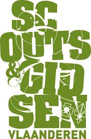

Mijn hobby is Scouts. Ik doe dat bij Scouts en Gidsen vlaanderen.
Scouts is een internationale jeugdbeweging.
Het is de grootste jeugdbeweging wereldwijd met ongeveer 55 miljoen leden wereldwijd.
Deze leden zijn verspreid over 223 landen.
De meeste van deze leden komen uit Indonesië met 17 millioen leden uit Indonesië.
Enkel in China, Cuba, Laos, Noord-Korea en Andorra zijn er geen Scouts.
Genoeg gepraat over de Scouts op internationaal niveau. Ik ga even inzoomen op mijn Scoutsgroep.
Ik zit bij de groep van de givers. Dat is het 3de middelbaar tot het 6de middelbaar.
De Giver groep is een van de weinige groepen waar jongens en meisjes in 1 groep zitten.
Het woord Givers is een combinatie van 2 woorden: het woord verkenners (de jongens) en het woord Gidsen (de meisjes).
Hieronder is een tabel met alle groepen.
| Groep | Geslacht | leeftijd |
|---|---|---|
| kapoenen | jongens en meisjes | 1ste tot 2de studiejaar |
| welpen | jongens | 3de tot 5de studiejaar |
| kabouters | meisjes | 3de tot 5de studiejaar |
| jongverkennners | jongens | 6de studiejaar tot 2de middelbaar |
| jonggidsen | meisjes | 6de studiejaar tot 2de middelbaar |
| givers | jongens en meisjes | 3de middelbaar tot 5de middelbaar |